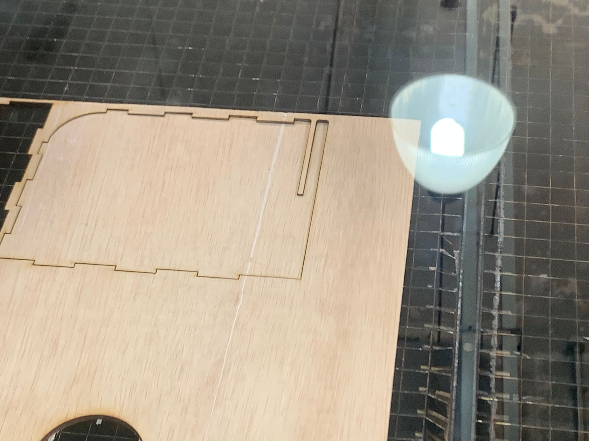
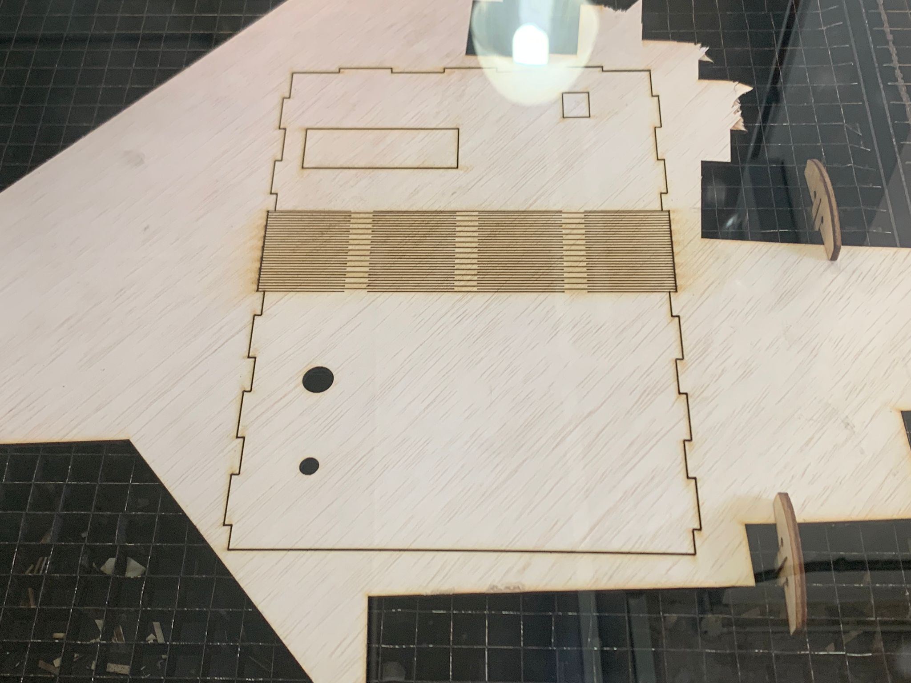
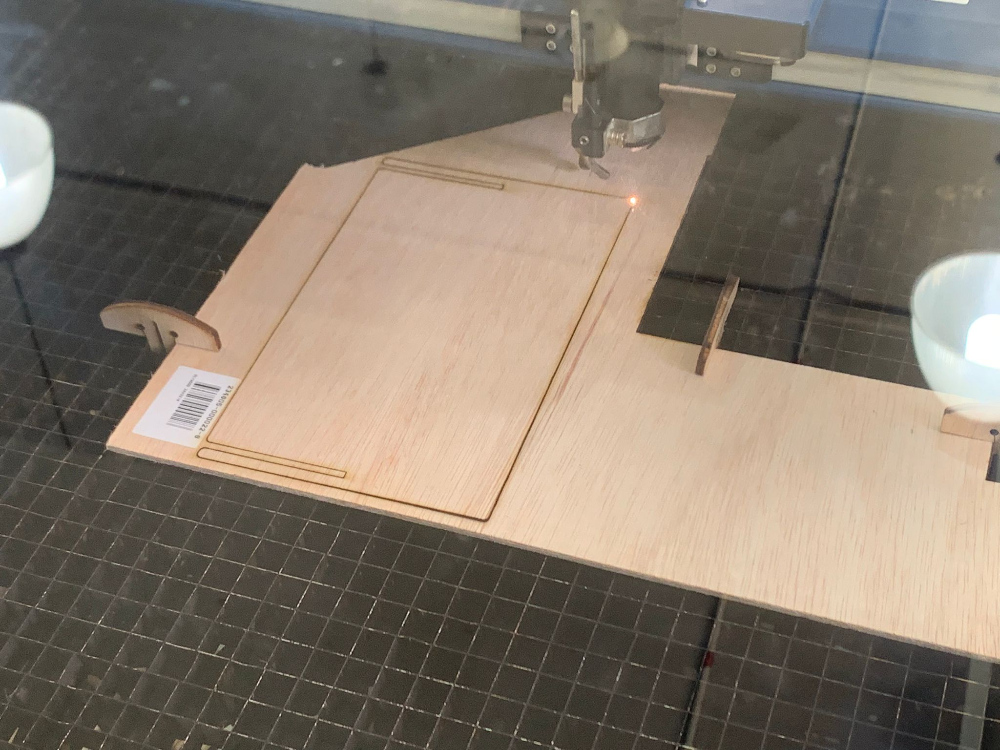
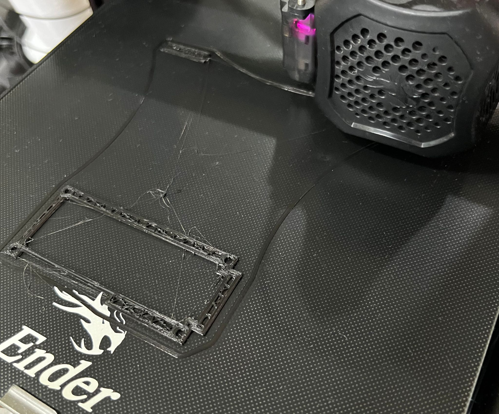
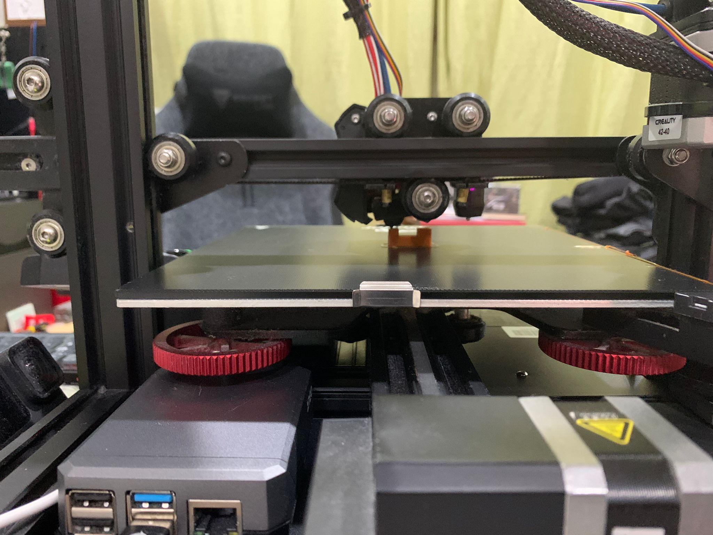

Final Project navigation
Overview • 2D and 3D parts • Electronics and programming • Assembly and final thoughts
2D parts
All parts except for the tray are laser-cut, using 3mm thick plywood.
Using similar methods to what I did for the laser-cut accessories box, I designed a main housing for the clock.
The following still includes the tray part, which is 3d-printed.
I wanted the back part to be easily removable to people can open the back, so the back piece uses a slot rather than a finger joint.
  I used glue to stick together the parts (which I unfortunately did not take a photo of)
3D printed parts
I wanted to make the knob in 3D printing to make it easier for a person to adjust the clock.
I had to use a set of calipers to check the size of the rotary encoder rod to get the right size.
I made a tray in fusion 360 to help hold the arduino and the DHT11. (this can be seen in the main box of the clock.)
After this, I also realised that I would need a bracket to help attach the LCD and button to the box to hot glue.
I took measurements of the parts and designed them to fit with the parts.
 